The Peloton companion app
Know what’s coming next. Prove you’re getting stronger.
mPaceline Pulse live-tracks your Peloton class with your real equipment metrics, shows you the upcoming efforts before the instructor calls them, and turns every workout into proof of progress.
- Peloton Bike & Bike+
- Peloton Tread
- Peloton Row
- Peloton App + your own bike, treadmill or rower
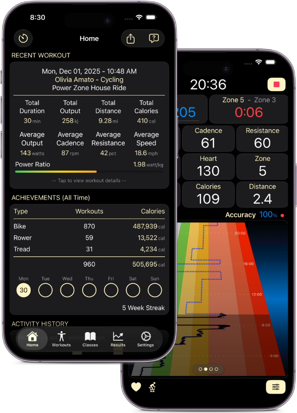
Built for how you ride Peloton
Whether the class plays on a Peloton screen or on your iPad or TV, mPaceline Pulse fills in what Peloton doesn’t show you.
Get more out of the screen you already have
- Your metrics stream from Peloton in real time, with no extra sensors to pair
- See the whole class structure and what’s coming next, not just the current target
- Mount your iPhone on the handlebars or crossbar for an at-a-glance second screen
- Your full Peloton history downloads automatically, back to your very first ride
See the numbers the Peloton App can’t
- Reads your bike, treadmill or rower over Bluetooth: cadence, resistance, power, speed, distance, pace, incline and stroke rate
- Compares your live numbers to the instructor’s targets, so you stop guessing
- Real Power Zone training on non-Peloton bikes, including FTP tests
- Every class is recorded and kept on your devices to build your history
1 · During the class
See the class before it happens
When your Peloton class starts, mPaceline Pulse detects it and loads the full class plan. Your live metrics are drawn right on top of it, so you always know where you are and what’s next.
- Upcoming efforts. Graphs show the cadence, resistance and power changes ahead, so you can pace a hard block before it starts.
- Power Zone cues. Your current zone, the next zone and a countdown to the change, plus an accuracy score for how well you’re holding it.
- Every discipline. Cadence and resistance on the bike, speed and incline on the tread, stroke rate on the rower.
- Heart rate. From a chest strap, armband or your Apple Watch.
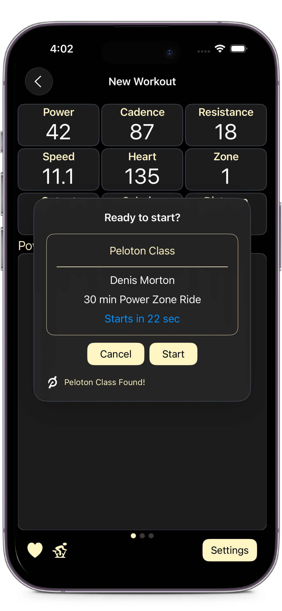
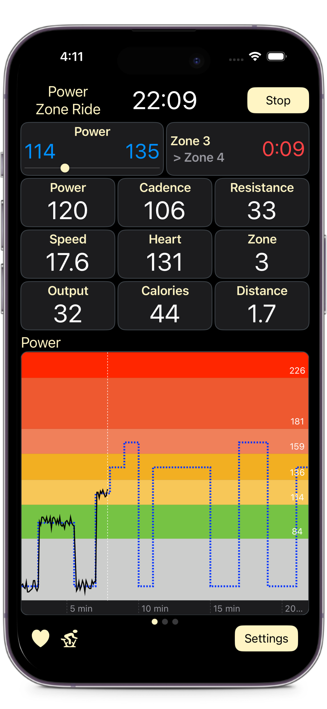
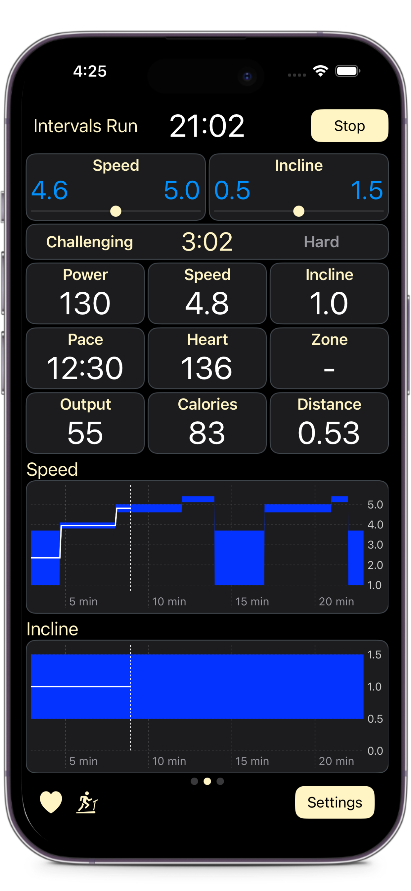
2 · Over weeks, months and years
Proof your training is paying off
Connect your Peloton account and your entire workout history comes with you. Riding third-party equipment? mPaceline Pulse records every class as you go. Either way, your progress is easy to see.
- Get measurably stronger. Watch your output, cadence and resistance climb over time.
- Track your FTP. See every FTP test in one place and your Power Zones move up with it.
- Compare repeat classes. Took the same ride twice? Put them side by side and see exactly where you improved.
- Personal records. PR Explorer shows your best output for every class length.
- Fitness, fatigue and form. Training metrics show when you’re ready to push and when to recover.
- Stay consistent. Weekly streaks, all-time totals and calendars keep you showing up.
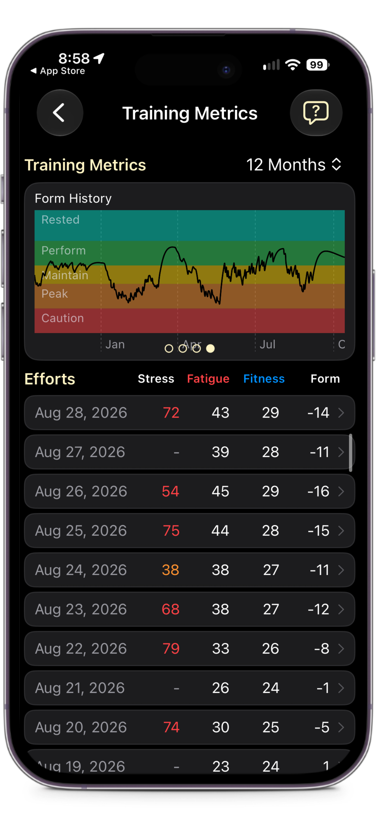
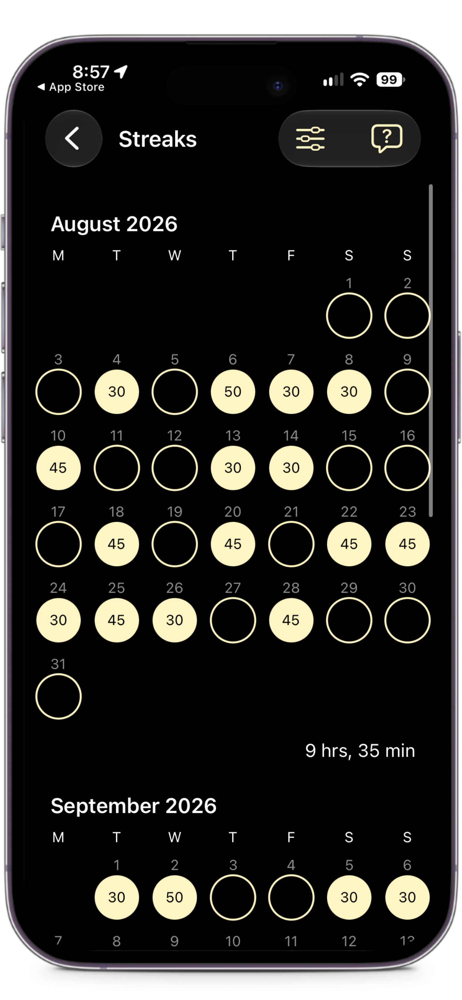
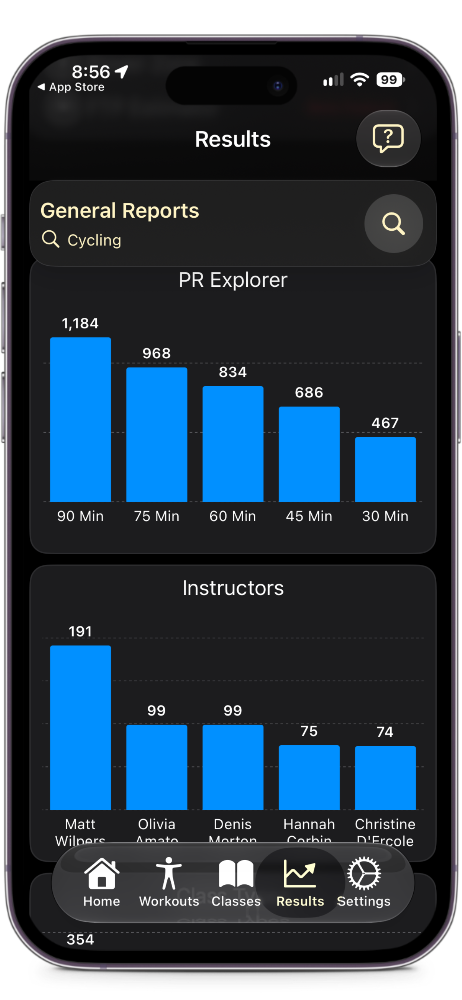
3 · Before you press start
Pick the right class, every time
Browse Peloton classes with their structure drawn out, so zones, intervals and intensity are clear at a glance. Open any class to see its full plan, Power Zone graph or speed and incline cues, and even the playlist. Choose an all-out day or an easy recovery spin with confidence, then bookmark it for later.
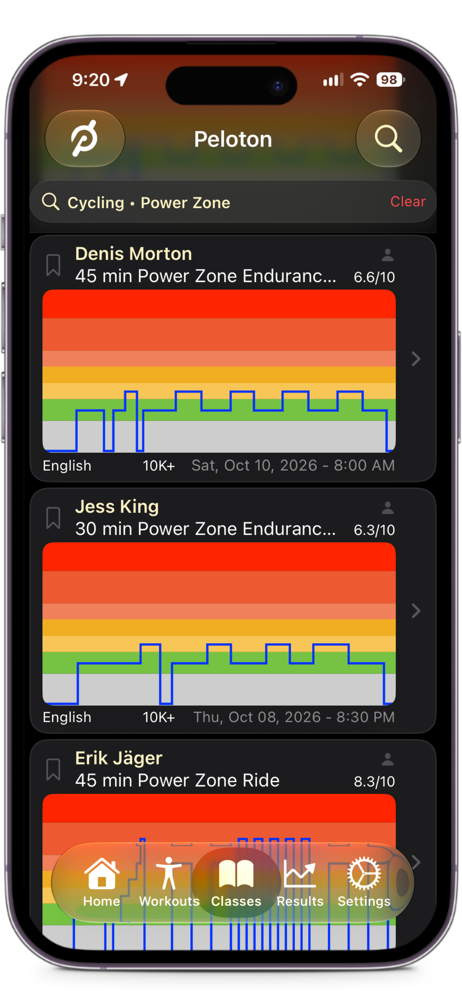
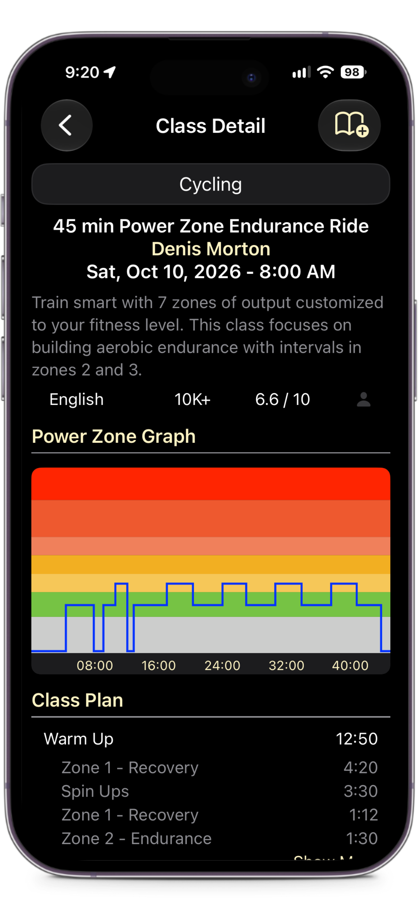
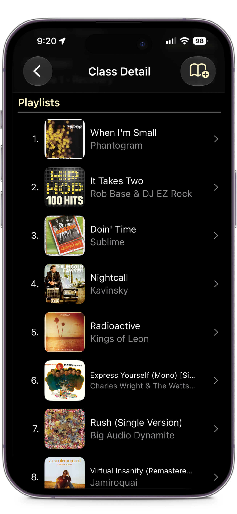
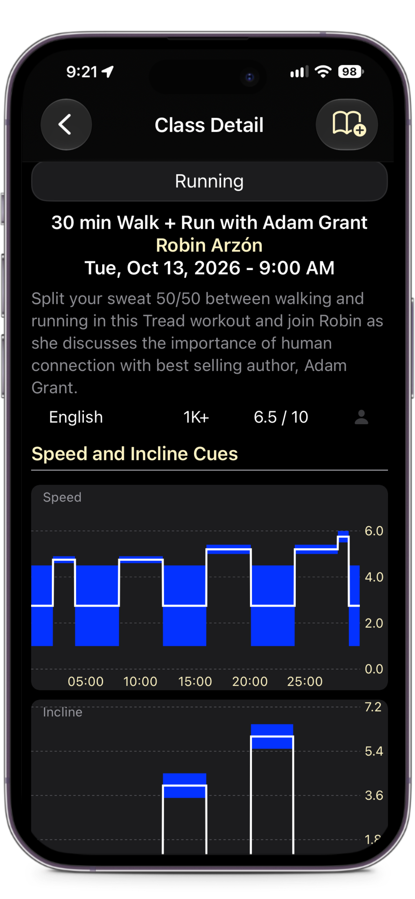
Up and running in minutes
-
Connect Peloton
Sign in with Peloton’s secure login. Your workout history starts downloading.
-
Pair your equipment
Peloton hardware works automatically. Other bikes, treadmills, rowers and heart-rate monitors pair over Bluetooth.
-
Start any class
Start the class in Peloton. mPaceline Pulse finds it and starts tracking automatically.
Popular setups: an iPhone on your handlebars, or Peloton and mPaceline Pulse side by side on one iPad. See setup options →
Riders love it
reviews on the App Store
“I have the app ‘floating’ over Peloton on my iPad and it transforms the experience. I get a load of visuals, much better than anyone on a Peloton Bike will see.”
“I am an avid Peloton Power Zone rider who uses a Keiser bike. This app is exceptional in linking to my Keiser and Peloton… The training details are just what the serious athlete wants!”
“The analytics just keep getting better and better! … The team is constantly looking for ways to improve user experience and truly care for what we want to see.”
“This app is perfect for use with my power zone rides. The developer is always updating and quick to respond to questions I had.”
Questions before you download
Do I need a Peloton membership?
To live-track classes and download your history, yes. mPaceline Pulse connects to your Peloton account to get class plans, instructor cues and your workouts. It works with an All-Access membership on Peloton hardware or the Peloton App on your own equipment.
Will it work with my bike, treadmill or rower?
Peloton Bike, Bike+, Tread and Row stream metrics through your Peloton account. For other equipment, mPaceline Pulse connects to Bluetooth-enabled bikes, trainers, treadmills and rowers, with direct support for Keiser M Series bikes. Heart rate can come from a Bluetooth strap or your Apple Watch. Use the free trial to confirm your equipment connects. How connecting works
What device do I run it on?
iPhone, iPad or both, with an optional Apple Watch app for heart rate. Most Peloton hardware owners mount an iPhone. Peloton App users often play the class on an iPad or TV and run mPaceline Pulse on an iPhone, or run both apps together on one iPad. Compare setups
I do Power Zone training. What do I get?
Enter your FTP and mPaceline Pulse builds your zones, shows the cued zone and the next one with a countdown, scores how accurately you hold each zone, and tracks your FTP over time. Power Zones and FTP
How much does it cost?
Download it free and start a 7-day trial with full access. Only subscribe if it earns a spot in your training. Current pricing is shown in the App Store.